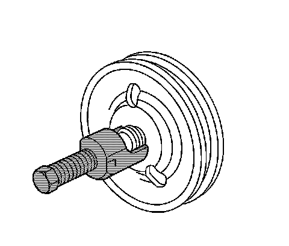
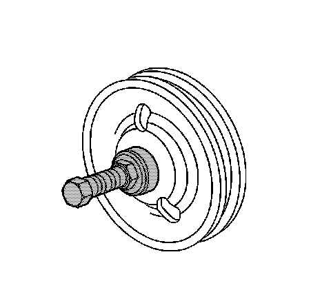

Power Steering Pump Pulley Replacement
Power Steering Pump Pulley Replacement
Tools Required
* J 25033-C Pulley Installer
* J 25034-C Pulley Remover
Removal Procedure
1. Remove the appropriate air cleaner duct. Refer to Air Cleaner Inlet Duct Replacement () for the 3.6L (LY7 - Gas, 6 Cylinder, 3.6L, SFI, V6) engine or Air Cleaner Outlet Duct Replacement (Service and Repair) for the 4.6L (LH2 - Gas, 8 Cylinder, 4.6L, SFI, V8, DOHC, HO) engine.
2. Release the appropriate belt off the power steering pump pulley. Refer to Air Conditioning Compressor and Power Steering Pump Belt Replacement () for the 3.6L (LY7 - Gas, 6 Cylinder, 3.6L, SFI, V6) engine or Water Pump and Air Conditioning Compressor and Power Steering Pump Belt Replacement (Water Pump and Air Conditioning Compressor and Power Steering Pump Belt Replacement) for the 4.6L (LH2 - Gas, 8 Cylinder, 4.6L, SFI, V8, DOHC, HO) engine.

3. Remove the power steering pump pulley using remover J 25034-C .
Installation Procedure

1. Install the power steering pump pulley using installer J 25033-C .

2. Ensure that the axial tolerance of the power steering pump pulley on the power steering pump is within 0.25 mm (0.010 in).
3. Install the appropriate belt on the power steering pump pulley. Refer to Air Conditioning Compressor and Power Steering Pump Belt Replacement () for the 3.6L (LY7 - Gas, 6 Cylinder, 3.6L, SFI, V6) engine or Water Pump and Air Conditioning Compressor and Power Steering Pump Belt Replacement (Water Pump and Air Conditioning Compressor and Power Steering Pump Belt Replacement) for the 4.6L (LH2 - Gas, 8 Cylinder, 4.6L, SFI, V8, DOHC, HO) engine.
4. Install the appropriate air cleaner duct. Refer to Air Cleaner Inlet Duct Replacement () for the 3.6L (LY7 - Gas, 6 Cylinder, 3.6L, SFI, V6) engine or Air Cleaner Outlet Duct Replacement (Service and Repair) for the 4.6L (LH2 - Gas, 8 Cylinder, 4.6L, SFI, V8, DOHC, HO) engine.